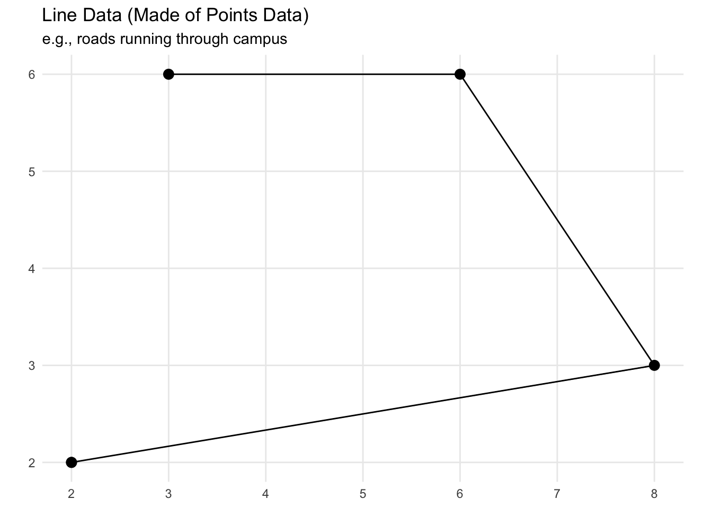
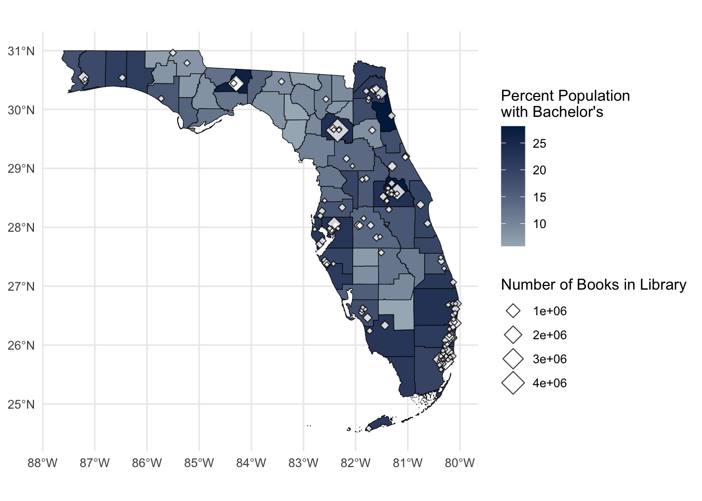
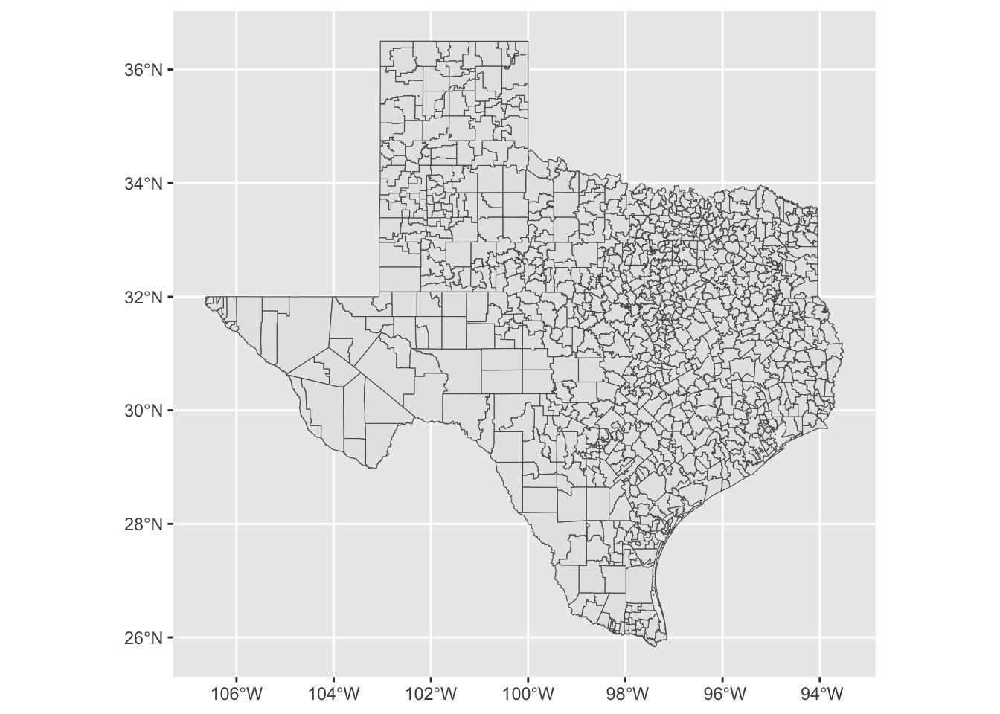
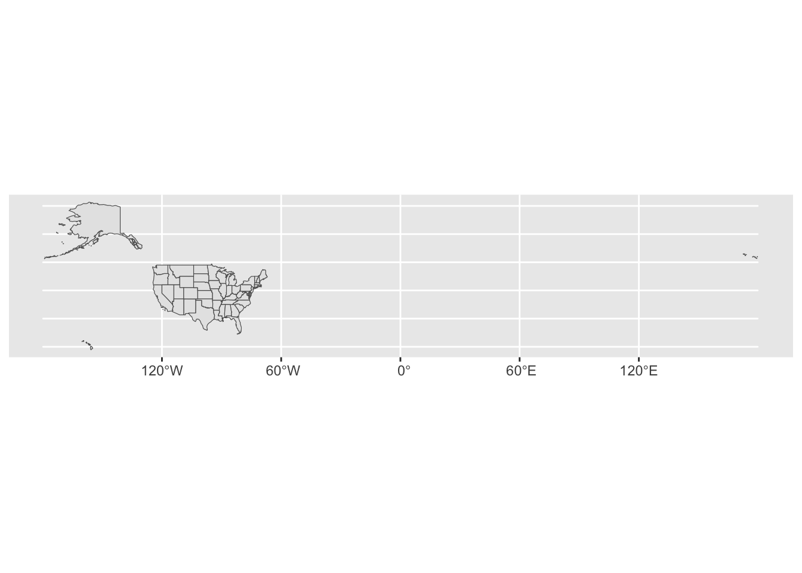
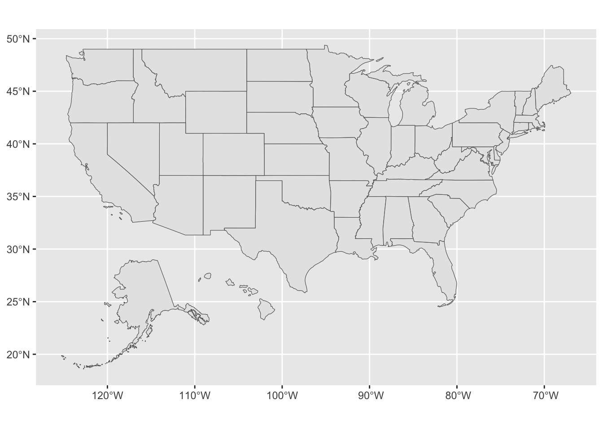

library(tidyverse)Warning: package 'lubridate' was built under R version 4.4.1library(sf)Warning: package 'sf' was built under R version 4.4.1library(tidycensus)Warning: package 'tidycensus' was built under R version 4.4.1library(tigris)This is a lesson I originally wrote as a TA for this class with Dr. Skinner in Spring 2023
It is modeled on a real map-making project I was tasked with in my Graduate Assistantship the previous summer, so is an example of the kind of task you may be asked to do
As well as making maps, along the way we are also going to touch on
Using APIs to automatically download data
Some very fundamental aspects of spatial data
I will admit, to just makes simple maps (e.g., coloring in states based on a policy adoption), there are simpler ways to go about this
Instead, the way we are going to cover to involves learning some basics of spatial data and how maps are made
To complete the lesson, we are going to use 3 packages
tidyverse and ggplot to manipulate data and make the map plots
tidycensus to download US Census data tied to spatial data
tigris to download US spatial data and make some spatial transformations
sf to wrangle our spatial data and integrate with ggplot
We already have tidyverse, but be sure to install the others if you don’t have them already
library(tidyverse)Warning: package 'lubridate' was built under R version 4.4.1library(sf)Warning: package 'sf' was built under R version 4.4.1library(tidycensus)Warning: package 'tidycensus' was built under R version 4.4.1library(tigris).shp: A traditional format from ESRI (the makers of ArcGIS)
.shp , reading one into R looks something like this
df_my_map <- read_sf("data/my-map-data/my-map-data").gdb: A modern format from ESRI.geojson: A plain text format.gpkg: An open-source driven single file formatsf package we are going to use is based on PostGIS which is the spatial accompaniment to PostgreSQL open source SQLsf is that it can read pretty much any format, and does so in the same way
read_sf("file/path.extension")Quick Exercise
There’s so much spatial data out there, using Google see if you can find a Shapefile for something you’re interested in, download it, and read it in to R using
read_sf()Hint: US Governments of all levels provide free to use spatial data. If you’re stuck, check out Alachua County GIS Portal
For today’s lesson, however, we are going to use an API to directly download our spatial data
tidycensustidycensus is, in my opinion, one of the easiest APIs to get set up and use in Rtidycensus for the first time, we first need to set our API keytidycensus package makes this much easier than many APIs by having a built-in function that you can use to save your API key to your computer
<key> of the code below## ---------------------------
##' [set API key]
## ---------------------------
## you only need to do this once: replace everything between the
## quotes with the key in the email you received
##
## eg. census_api_key("XXXXXXXXXXXXXXXXXX", install = T)
census_api_key("<key>", install = T)tidycensustidycensus functions that you can use to call in data, with each calling data from a different source operated by the US Census Bureau
get_acs()get_decennial()get_estimates()get_flows()get_pop_groups()get_pums()get_acs()
<- the data we pull down into the object df_census:## ---------------------------
##' [Get ACS Data]
## ---------------------------
df_census <- get_acs(geography = "county",
state = "FL",
year = 2021,
variables = "DP02_0065PE", # Pop >=25 with Bachelors
output = "wide",
geometry = TRUE)Warning: • You have not set a Census API key. Users without a key are limited to 500
queries per day and may experience performance limitations.
ℹ For best results, get a Census API key at
http://api.census.gov/data/key_signup.html and then supply the key to the
`census_api_key()` function to use it throughout your tidycensus session.
This warning is displayed once per session.Let’s walk through each element of this command in turn:
geography = "county"
"state", for example, to get state level datastate = "FL"
c()
county =, which works in a similar way
county = "Alachua", you would only get county-level data for Alachua County, Florida.year = 2021
variables = "DP02_0065PE"
"DP02_0065PE"
tidycensus: understanding Census API’s variable names
DP02_0065
load_variables() command, but doing so creates a massive table in R that is hard to navigate throughcrtl-f or cmd-f search for the variable you are looking forPE
DP02_0065 variables
E or PE
PE
EDP02_0065PE,
DP02_0065PEthe percent estimate of Bachelor’s degree attainment for those 25 years old and aboveDP02_0065PM which is the margin of error for the percentage (hence the M at the end)
output = "wide"
geometry = TRUE
FALSE , which just downloads the Census dataQuick Excercise
Using the API variable dictionary we used above, add another variable to your
get_acs()usingc()
Okay, let see what the top of our new data looks like.
## show header of census data
head(df_census)Simple feature collection with 6 features and 4 fields
Geometry type: MULTIPOLYGON
Dimension: XY
Bounding box: xmin: -82.57599 ymin: 27.64324 xmax: -80.73292 ymax: 30.14312
Geodetic CRS: NAD83
GEOID NAME DP02_0065PE DP02_0065PM
1 12095 Orange County, Florida 23.0 0.6
2 12125 Union County, Florida 7.6 2.1
3 12069 Lake County, Florida 16.0 0.9
4 12127 Volusia County, Florida 16.8 0.5
5 12105 Polk County, Florida 14.0 0.5
6 12119 Sumter County, Florida 19.4 1.4
geometry
1 MULTIPOLYGON (((-81.65856 2...
2 MULTIPOLYGON (((-82.57599 2...
3 MULTIPOLYGON (((-81.95616 2...
4 MULTIPOLYGON (((-81.6809 29...
5 MULTIPOLYGON (((-82.1062 28...
6 MULTIPOLYGON (((-82.31133 2...GEOID to DP02_0065PM, you’ll see something that looks more like the tibbles we are familiar withgeometry columndf_census in the viewer, it looks like a normal data frame ending with this slightly different column called geometry
st_drop_geometry() to remove the spatial features, then either print or view it## view data frame without geometry data
df_census_view <- df_census |>
st_drop_geometry()
head(df_census_view) GEOID NAME DP02_0065PE DP02_0065PM
1 12095 Orange County, Florida 23.0 0.6
2 12125 Union County, Florida 7.6 2.1
3 12069 Lake County, Florida 16.0 0.9
4 12127 Volusia County, Florida 16.8 0.5
5 12105 Polk County, Florida 14.0 0.5
6 12119 Sumter County, Florida 19.4 1.4
Note from Ben: If you are going to do spatial work in education research (other than just making maps for display), you really need to know what your projection is doing. Even if you are just making maps for display, some projections are, IMNSHO, more aesthetically pleasing that others in different situations.
crs = 4326 as we go through some examples plotting spatial data below.geometry
join(df_one, df_two, by = geometry) or filter(geometry == x) like we do with other variables in our data frames
st_filter()st_join()In short, what you need to know about spatial data for this lesson is this:
geometry attached to each observation/row
filter() it like normal; instead you have to use functions from a spatial data package such as sf or tigriscrs = 4326 will give a nice simple flat projection
If we have made it this far, things are about to get much more interesting and hands-on!
## ---------------------------------------------------------
##' [Making a map (finally)]
## ---------------------------------------------------------
## ---------------------------
##' [Layer one: base map]
## ---------------------------
## show CRS for dataframe
st_crs(df_census)Coordinate Reference System:
User input: NAD83
wkt:
GEOGCRS["NAD83",
DATUM["North American Datum 1983",
ELLIPSOID["GRS 1980",6378137,298.257222101,
LENGTHUNIT["metre",1]]],
PRIMEM["Greenwich",0,
ANGLEUNIT["degree",0.0174532925199433]],
CS[ellipsoidal,2],
AXIS["latitude",north,
ORDER[1],
ANGLEUNIT["degree",0.0174532925199433]],
AXIS["longitude",east,
ORDER[2],
ANGLEUNIT["degree",0.0174532925199433]],
ID["EPSG",4269]]That isn’t our simple flat EPSG 4326, so we are going to st_transform() to set that.
## transform the CRS to 4326
df_census <- df_census |>
st_transform(crs = 4326)Then we can check again…
## show CRS again; notice how it changed from NAD93 to EPSG:4326
st_crs(df_census) Coordinate Reference System:
User input: EPSG:4326
wkt:
GEOGCRS["WGS 84",
ENSEMBLE["World Geodetic System 1984 ensemble",
MEMBER["World Geodetic System 1984 (Transit)"],
MEMBER["World Geodetic System 1984 (G730)"],
MEMBER["World Geodetic System 1984 (G873)"],
MEMBER["World Geodetic System 1984 (G1150)"],
MEMBER["World Geodetic System 1984 (G1674)"],
MEMBER["World Geodetic System 1984 (G1762)"],
MEMBER["World Geodetic System 1984 (G2139)"],
ELLIPSOID["WGS 84",6378137,298.257223563,
LENGTHUNIT["metre",1]],
ENSEMBLEACCURACY[2.0]],
PRIMEM["Greenwich",0,
ANGLEUNIT["degree",0.0174532925199433]],
CS[ellipsoidal,2],
AXIS["geodetic latitude (Lat)",north,
ORDER[1],
ANGLEUNIT["degree",0.0174532925199433]],
AXIS["geodetic longitude (Lon)",east,
ORDER[2],
ANGLEUNIT["degree",0.0174532925199433]],
USAGE[
SCOPE["Horizontal component of 3D system."],
AREA["World."],
BBOX[-90,-180,90,180]],
ID["EPSG",4326]]Looks good!
ggplot() to make our maps because there is a special geom_* that works with spatial data
geom_sf()base_map## create base map
base_map <- ggplot() +
geom_sf(data = df_census,
aes(fill = DP02_0065PE),
color = "black",
size = 0.1) +
labs(fill = str_wrap("Percent Population with Bachelor's", 20)) +
scale_fill_gradient(low = "#a6b5c0", high = "#00254d") +
theme_minimal()Let’s go through each line of the geom_sf() as we did for get_acs() above:
data = df_census
geom_sf() will handle how to plot that for us.aes(fill = DP02_0065PE)
color = "black"
aes() argument it will applied consistenly across the plot. We are telling it to make all the lines black.size = 0.1
Then we have added two visual alterations like we covered in the second plotting lesson. For a quick reminder:
labs(fill = str_wrap("Percent Population with Bachelor's", 20))
fill this title
str_wrap() says to make a newline (wrap) when there are more than 20 charactersscale_fill_gradient(low = "#a6b5c0", high = "#00254d")
fill with a color gradient starting at with light slate blue and finishing with a dark slate blue
base_map object to see what this looks like## call base map by itself
base_mapWoohoo! We have made a map!
geom_sf() is just another type of ggplot, so, we can use all the same things we learnedQuick Exercise
- Play around with the
scale_fill_gradientto use your favorite color- Play around with the
themeargument, can you find the theme that gets rid of all grid lines?
Now we are going to make it more interesting with one more layer…
HD and AL data files for 2021## ---------------------------
##' [Layer Two: Institutions]
## ---------------------------
## read in IPEDS data
df_ipeds <- read_csv("data/mapping-api-data.csv")Let’s take a look at our data
## show IPEDS data
head(df_ipeds)# A tibble: 6 × 78
UNITID INSTNM CONTROL ICLEVEL STABBR FIPS COUNTYNM COUNTYCD LATITUDE LONGITUD
<dbl> <chr> <dbl> <dbl> <chr> <dbl> <chr> <dbl> <dbl> <dbl>
1 100654 Alaba… 1 1 AL 1 Madison… 1089 34.8 -86.6
2 100663 Unive… 1 1 AL 1 Jeffers… 1073 33.5 -86.8
3 100690 Amrid… 2 1 AL 1 Montgom… 1101 32.4 -86.2
4 100706 Unive… 1 1 AL 1 Madison… 1089 34.7 -86.6
5 100724 Alaba… 1 1 AL 1 Montgom… 1101 32.4 -86.3
6 100751 The U… 1 1 AL 1 Tuscalo… 1125 33.2 -87.5
# ℹ 68 more variables: LEXP100K <dbl>, LCOLELYN <dbl>, XLPBOOKS <chr>,
# LPBOOKS <dbl>, XLEBOOKS <chr>, LEBOOKS <dbl>, XLEDATAB <chr>,
# LEDATAB <dbl>, XLPMEDIA <chr>, LPMEDIA <dbl>, XLEMEDIA <chr>,
# LEMEDIA <dbl>, XLPSERIA <chr>, LPSERIA <dbl>, XLESERIA <chr>,
# LESERIA <dbl>, XLPCOLLC <chr>, LPCLLCT <dbl>, XLECOLLC <chr>,
# LECLLCT <dbl>, XLTCLLCT <chr>, LTCLLCT <dbl>, XLPCRCLT <chr>,
# LPCRCLT <dbl>, XLECRCLT <chr>, LECRCLT <dbl>, XLTCRCLT <chr>, …## convert coordinates columns into a true geometry column; this is
## much more reliable than simply plotting them as geom_points as it
## ensures the CRS matches etc.
df_ipeds <- df_ipeds |>
st_as_sf(coords = c("LONGITUD", "LATITUDE"))st_as_sf()
coords =, are in columns name LONGITUD and LATITUDEsf it’s longitude then latitude as we follow the usual x, y order
x axisy axis## show IPEDS data again
head(df_ipeds)Simple feature collection with 6 features and 76 fields
Geometry type: POINT
Dimension: XY
Bounding box: xmin: -87.54598 ymin: 32.36261 xmax: -86.17401 ymax: 34.78337
CRS: NA
# A tibble: 6 × 77
UNITID INSTNM CONTROL ICLEVEL STABBR FIPS COUNTYNM COUNTYCD LEXP100K LCOLELYN
<dbl> <chr> <dbl> <dbl> <chr> <dbl> <chr> <dbl> <dbl> <dbl>
1 100654 Alaba… 1 1 AL 1 Madison… 1089 1 2
2 100663 Unive… 1 1 AL 1 Jeffers… 1073 1 2
3 100690 Amrid… 2 1 AL 1 Montgom… 1101 1 2
4 100706 Unive… 1 1 AL 1 Madison… 1089 1 2
5 100724 Alaba… 1 1 AL 1 Montgom… 1101 1 2
6 100751 The U… 1 1 AL 1 Tuscalo… 1125 1 2
# ℹ 67 more variables: XLPBOOKS <chr>, LPBOOKS <dbl>, XLEBOOKS <chr>,
# LEBOOKS <dbl>, XLEDATAB <chr>, LEDATAB <dbl>, XLPMEDIA <chr>,
# LPMEDIA <dbl>, XLEMEDIA <chr>, LEMEDIA <dbl>, XLPSERIA <chr>,
# LPSERIA <dbl>, XLESERIA <chr>, LESERIA <dbl>, XLPCOLLC <chr>,
# LPCLLCT <dbl>, XLECOLLC <chr>, LECLLCT <dbl>, XLTCLLCT <chr>,
# LTCLLCT <dbl>, XLPCRCLT <chr>, LPCRCLT <dbl>, XLECRCLT <chr>,
# LECRCLT <dbl>, XLTCRCLT <chr>, LTCRCLT <dbl>, LILLDYN <dbl>, …Quick Question
Something’s not quite right, can you tell me what?
Hint: It’s something we just talked about being very important
## check CRS for IPEDS data
st_crs(df_ipeds)Coordinate Reference System: NAYep, NA… Luckily the fix for this is simple
## add CRS to our IPEDS data
df_ipeds <- df_ipeds |>
st_set_crs(4326) # When you first add coordinates to geometry, it doesn't know
# what CRS to use, so we set to 4326 to match our base map dataOkay, let’s have another look…
## check CRS of IPEDS data again
st_crs(df_ipeds)Coordinate Reference System:
User input: EPSG:4326
wkt:
GEOGCRS["WGS 84",
ENSEMBLE["World Geodetic System 1984 ensemble",
MEMBER["World Geodetic System 1984 (Transit)"],
MEMBER["World Geodetic System 1984 (G730)"],
MEMBER["World Geodetic System 1984 (G873)"],
MEMBER["World Geodetic System 1984 (G1150)"],
MEMBER["World Geodetic System 1984 (G1674)"],
MEMBER["World Geodetic System 1984 (G1762)"],
MEMBER["World Geodetic System 1984 (G2139)"],
ELLIPSOID["WGS 84",6378137,298.257223563,
LENGTHUNIT["metre",1]],
ENSEMBLEACCURACY[2.0]],
PRIMEM["Greenwich",0,
ANGLEUNIT["degree",0.0174532925199433]],
CS[ellipsoidal,2],
AXIS["geodetic latitude (Lat)",north,
ORDER[1],
ANGLEUNIT["degree",0.0174532925199433]],
AXIS["geodetic longitude (Lon)",east,
ORDER[2],
ANGLEUNIT["degree",0.0174532925199433]],
USAGE[
SCOPE["Horizontal component of 3D system."],
AREA["World."],
BBOX[-90,-180,90,180]],
ID["EPSG",4326]]And we see we have our nice CRS back!
base_map, add a layer representing the colleges as points, and store it into a new object point_map:point_map <- base_map +
geom_sf(data = df_ipeds |> filter(FIPS == 12), # Only want to plot colleges in FL
aes(size = LPBOOKS),
alpha = 0.8,
shape = 23, # Get the diamond shape which stands out nicely on the map
fill = "white", # This shape has a fill and color for the outline
color = "black") + # FYI 21 is a circle with both fill and color
labs(size = "Number of Books in Library")As we have done all lesson, we can take a quick look through our second geom_sf() function line by line:
data = df_ipeds |> filter(FIPS == 12):
df_ipeds data, which covers the country, but since our base map is Florida, we only want colleges located in the Sunshine State (which is FIPS code 12).aes(size = LPBOOKS)
LPBOOKS, which is the total number of books in the college’s library collection. More books, bigger point!shape = 23
fill = "white" and color = "black"
fill and a border to color, the basic point shape only has coloralpha = 0.5
aes() so we are making it all 50% transparent.labs(size = "Number of Books in Library")
Phew! Last thing, let’s call our new point_map object and take a look at what we created!
## show new map
point_map
Quick Exercise
- Play around the with
shapeargument and see what other options there are- Time permitting: See if you can get rid of the scientific numbering (e.g.,
1e+06) so it looks the plot below
- There’s a few ways, Google and StackOverflow have some helpful answers
tidycensus we can swap out the base map geography to have most common US geographies and/or swap out any variable available in from the Census Bureau
tigristigris basicstigris is a package that offers a direct way of downloading US spatial data that is not tied to census data.
left_join()tidycensus with geography = "school district (unified)"school_districts() for example retrieves a shapefile for US school districtsggplot() +
geom_sf(data = df_school_dist_tx,
aes())
aes() blank, as geom_sf() will automatically make the spatial elements for us and right now we have no additional info to add to plot elements like fillcb = TRUE
tigris function names are really simple
states() downloads spatial data for the states
cb = TRUE we discussed above resolution = "20m" sacrifices a little detail for speed and efficiency for mappingLike we did before, let’s take a peak at our newly downloaded data.
## look at head of state data
head(df_st)Simple feature collection with 6 features and 9 fields
Geometry type: MULTIPOLYGON
Dimension: XY
Bounding box: xmin: -179.1743 ymin: 24.49813 xmax: 179.7739 ymax: 71.35256
Geodetic CRS: NAD83
STATEFP STATENS AFFGEOID GEOID STUSPS NAME LSAD ALAND
1 22 01629543 0400000US22 22 LA Louisiana 00 1.119153e+11
2 02 01785533 0400000US02 02 AK Alaska 00 1.478943e+12
3 24 01714934 0400000US24 24 MD Maryland 00 2.515199e+10
4 55 01779806 0400000US55 55 WI Wisconsin 00 1.402923e+11
5 12 00294478 0400000US12 12 FL Florida 00 1.389617e+11
6 13 01705317 0400000US13 13 GA Georgia 00 1.494866e+11
AWATER geometry
1 23736382213 MULTIPOLYGON (((-94.04305 3...
2 245378425142 MULTIPOLYGON (((179.4813 51...
3 6979074857 MULTIPOLYGON (((-76.04621 3...
4 29343646672 MULTIPOLYGON (((-86.93428 4...
5 45972570361 MULTIPOLYGON (((-81.81169 2...
6 4418360134 MULTIPOLYGON (((-85.60516 3...## quick plot of states
ggplot() +
geom_sf(data = df_st,
aes(),
size = 0.1) # keep the lines thin, speeds up plotting processing
shift_geometry()
## replotting with shifted Hawaii and Alaska
ggplot() +
geom_sf(data = shift_geometry(df_st),
aes(),
size = 0.1) # keep the lines thin, speeds up plotting processinggeom_sf()
## change CRS to what we used for earlier map
ggplot() +
geom_sf(data = shift_geometry(df_st) |> st_transform(4326),
aes(),
size = 0.1)
Quick Exercise
- Pick a different projection from the list of EPSG projections and see what changes
- Perhaps try a projection for a different part of the world
- Below I tried EPSG 6684 for Tokyo, Japan
## change CRS to requirements for Peters projection
## h/t https://gis.stackexchange.com/questions/194295/getting-borders-as-svg-using-peters-projection
pp_crs <- "+proj=cea +lon_0=0 +x_0=0 +y_0=0 +lat_ts=45 +ellps=WGS84 +datum=WGS84 +units=m +no_defs"
ggplot() +
geom_sf(data = shift_geometry(df_st) |> st_transform(pp_crs),
aes(),
size = 0.1)For this week’s assignment, you have two options, make another map similar to the one we made in class, or, make a map you can use in your final project
Using the tidycensus package and code from this lesson, make a different point map following the instructions below:
tidycensus code to download data for a different geography and a different variableaes() based on a new variableUsing data from your final project (plus tidycensus and/or tigris as needed) make a map following the guidance from the lesson. This will take a bit more time now, but, if it makes sense for your final project it might save you time later.
geom_sf()Hint: The main challenge will be working out how to either convert you data to spatial data or merge it with existing spatial data
Once complete turn in the .qmd file (it must render/run) to Canvas by the due date (usually Tuesday 12:00pm following the lesson). Assignments will be graded before next lesson on Wednesday in line with the grading policy outlined in the syllabus.